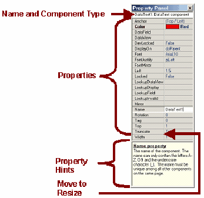
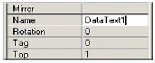

Панель свойств
Что такое панель
Панель свойств дает информацию о компонентах проекта. Это наиболее полезно при разработке отчета, поскольку дает простой доступ до всех ассоциированных с каждым компонентом свойств.
Панель свойств показывает и позволяет изменять значения любого компонента помещенного на страницу. Для получения информации о конкретном компоненте, выберите компонент перед просмотром его в панели свойств (смотрите главу «Выбор компонент» для получения более подробной информации по выбору объектов).
Панель свойств показывает текущие свойства компонента. Например, выбрав компонент DataText, в панели свойств будут показаны все его свойства, которые доступны для данного компонента.
В панели свойств есть три области. Первая в самом верху, показывает имя и тип компонента. Вторая в середине, показывает все свойства в двух колонках. Левая колонка содержит имена свойств, а правая показывает текущее значение этих свойств. Внизу панели свойств находится третья область, в которой содержится краткое описание текущего выбранного свойства.

В списке свойств (средняя секция), линия, разделяющая две колонки, может быть перемещена, позволяя лучший просмотр имен и значений. Для выполнения данной операции, поместите курсор поверх линии, пока его форма не сменится на двунаправленные стрелки. Затем нажмите левую кнопку мыши и, удерживая ее, перетяните ее влево или вправо для изменения колонок.
Помните, что компонент должен быть выбран, что бы его свойства можно было увидеть. Это также доступно и для нескольких компонент одновременно. Как только компонент выбран, любые его свойства в панели могут быть выбраны щелчком на нужном имени или его ячейке значения. У выбранного свойства затем можно изменить его значение. Когда выбрано любое свойство в панели свойств, то можно перемещаться между свойствами и с помощью клавиш вверх/вниз.

некоторые из имен свойств показаны жирным шрифтом. Это означает, что текущее значение отличается от значения по умолчанию. Например, когда компонент DataText размещается на странице, цвет по умолчанию черный. При смене цвета с красного на черный, имя свойства становится жирным. Когда значение снова меняется на значение по умолчанию, шрифт снова становится нормальным.
Как это можно использовать? Представим на момент, что отчет был разработанный коллегой, имеет проблему и не работает. Быстрый взгляд на свойства, позволяет найти измененные, возврат которых в исходное состояние позволяет решить проблему.
В то время как большинство компонент может быть выбрано щелчком по компоненту, то компонент Page особый случай. Щелчок по панели в окне визуального дизайнера очищает панель свойств, но не выбирает саму страницу.
Для выбора свойств страницы, щелкните по закладке вверху окна (область называемая, область закладок страниц) где показывается номер страницы. Другой альтернативой является выбор в дереве проекта.
Типы свойств
Каждое свойство имеет ассоциированный тип. Эти свойства можно редактировать в панели свойств. Свойства могут быть строковые или цифровые.
При редактировании строковых свойств Вы можете вводить любые символы, которые могут отображаться на экране. При редактировании числовых значений, это должно быть допустимое числовое значение. Десятичные числа другое общее свойство, которое можно редактировать
Многие свойства имеют предопределенные значения, которые можно выбрать. Данные значения показываются в виде списка, из которого их можно выбрать. Также есть свойства, которые сами являются другими свойствами, ассоциированными с ними.
Редакторы
В зависимости от типа выбранного свойства, есть три типа полей ввода. Первый тип это простое поле ввода, в котором печатается значение. Значение может быть цифровым, символьным, алфавитно-цифровым или набором одного из возможных значений. Выпадающий список это второй тип ввода, который может использовать пользователь. Если значение свойства является одним из предопределенных значений, выпадающий список появляется при нажатии на кнопку с маленькой стрелкой в правом углу поля ввода. Выберите нужное значение путем клика на нем. Третьим типом является диалог. Некоторые свойства требуют более одного значения для установки свойства (такие как шрифты). Для установки таких свойств есть кнопка с тремя точками (называемая эллипс) в правом углу поля ввода. При нажатии на данную кнопку появляется диалог (или мастер (wizard)) и в данном диалоге можно установить множество свойств.

Контекстное меню
При нажатии на правую кнопку появляется всплывающее контекстное меню. Данное контекстное меню можно использовать для установки различных параметров панели свойств.
Свойство Hints, первый элемент меню, прячет или показывает окно подсказок, которое расположено в самом низу панели свойств. Подсветка изменений второй элемент меню, разрешая или запрещая показ измененных свойств жирным шрифтом. Exclude Name, Size и Pos Changes это третий пункт меню определяющий, что изменение имени, размера и позиции (ширина и высота) исключаются из подсветки жирным при изменении их значений по умолчанию. Третий пункт становится полезным при множественном изменении свойств, и нужно видеть только те свойства, которые обычно не изменяются.
Упражнение 8: навигация по панели
Открытие панели свойств
| 1. | если панель свойств не видима, то перейдите в меню Tools. Из Tools подменю, выберите Property Panel. Поставьте там отметку. |
Определение областей панели свойств
| 2. | в данном примере, используется базовый компонент Page. Поэтому выберите компонент Page, щелкнув на страницу в области закладок дизайнера страниц. Заметим, что после выбора страницы, ее свойства появятся в панели свойств. |
| 3. | Дальше сделайте окно подсказки видимым внизу панели свойств, если оно не видимо в данный момент. В контекстном меню отметьте все доступные параметры. |
| 4. | расширьте панель свойств, что бы Вы могли видеть все свойства и также окно подсказок. В шагах от 5 до 8, читайте подсказки для получения большей информации о каждом свойстве. Примечание: образ справа изменяется в течение нескольких примеров. |
| 5. | выберите свойство Name. Заметим, что данное имя отражается в заголовке панели "Page1: Page component". Другая половина данной строки указывает на компонент, к которому это относится. Компонент является компонентом Page, что и отражается здесь. Свойство Name из примера строкового типа. |
| 6. | выберите свойство Bin строкой ниже. Заметим, что это показывается как выпадающее меню. Выпадающее меню выдает несколько предопределенных параметров, из которых можно сделать выбор. |
| 7. | выберите поле Grid Spacing. В данном примере это цифровой тип свойства. Что бы увидеть, что данное свойство делает, просто измените значение, и посмотрите на страницу. |
| 8. | нажмите на кнопку эллипс (…) в свойстве Parameters и появится диалог. Диалог позволяет устанавливать свойству множество значений. |
| 9. | в шаге 3, параметр Highlight Changes был отмечен в контекстном меню. Перейдите к свойству PaperSize и выберите другой тип бумаги. Заметим, что не только значение изменилось, но и свойство стало жирным. Данное подсвечивание жирным становится полезным для определения измененных свойств по умолчанию или их начальных значений. Попробуйте изменить другие значения, такие как высота и ширина страницы. |
| 10. | Также отмеченные в шаге 3, параметры Exclude Name, Size и Pos Changes. Это очень полезный параметр. В большинстве случаев имя, размер и позиции компонент на странице меняются часто. Что бы избежать подсвечивания этих общих свойств данный параметр исключает их из подсвечивания. Попробуйте снять отметку с данного параметра и изменить эти свойства. |